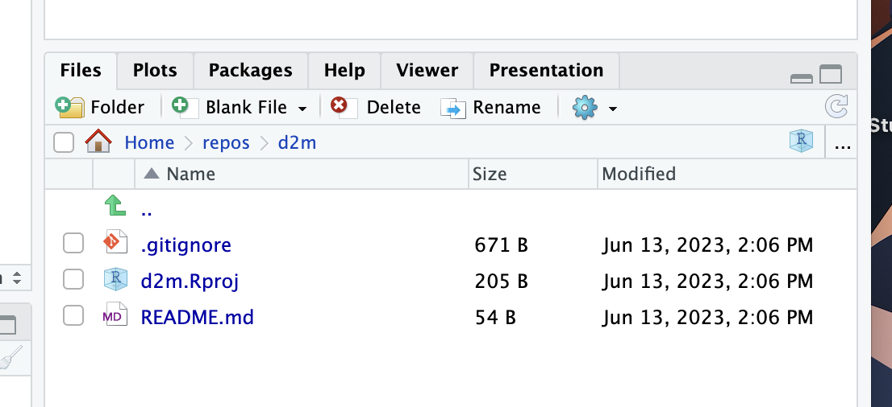

Using GitHub with RStudio
Some general resources
Happy Git and GitHub for the useR
Create a GitHub account for education using your UChicago email address. This may involve sending a picture of your student ID or verifying your student status in some other way. Getting approval might take a few minutes or a few days, so do this ASAP!
Install
- Git
- Many options! You just need one. A binary installer will likely be easiest for you if you’ve never used the terminal or command line.
- R
- R studio
Note: The first troubleshooting step for any issues with Terminal should be to start a new session (i.e., fully quit and reopen Terminal).
Connect
Connecting RStudio & GitHub Guide
Step 0
The basic connection between RStudio the IDE (not any specific project) and your GitHub account (not any specific repo) happens by creating and storing a personal access token for HTTPS (recommended, very easy) or keys for SSH.
You need to set this up before you can do anything else, but you should only ever need to do it once.
Again, there many options for how to do this. If you don’t already have a preference, I recommend following the directions in section 9.1 TL;DR. Those simple steps should be enough to get everything working and let you skip any additional steps in the terminal.
Once you’ve got your PAT stored and working, you can connect local projects and remote repositories in three ways:
- Turn a GitHub repo into a new RStudio Project - takes a minute but conceptually easy to follow
- Turn an RStudio project into a new GitHub repo - 2 lines of code, but a little opaque if you’re new to GitHub
- Connect an existing RStudio project to an existing GitHub repo - typically a mess, not recommended
Turn a GitHub repo into a new RStudio Project
I recommend starting with this method to get the hang of things, but if you want to go from an existing project to a new repo, instructions are below. It’s actually simpler to go the other direction, but if you’re not super familiar with GitHub this way will give you a clearer concept of what’s actually happening.
If you skipped the last part, go back and do it. You have to create and store a PAT by following the instructions in the previous section. Remember you should only need to do this once, not every time you connect a project to a repo.
Create a repo on GitHub:1

Clone the repo (from GitHub) as a new project in R studio. This will result in a new project containing 3 files: the .Rproj file, the .gitignore, and README.md.



Confirm that you can pull from GitHub to RStudio:
- Edit the readme file on the GitHub website. Add some new text or make any other obvious change.
- Commit the changes with an informative commit message.
- In R studio, open the Git tab and click pull. You should see a brief message describing the changes. Open the readme file in R studio and confirm the changes appear.
Confirm that you can push to GitHub from RStudio:
- Edit the readme file in the RStudio editor. Again, add some text or make any other obvious change and then save the file.
- To commit the changes, click “Commit” in the Git tab to open the “Review Changes” window. Select the files you have added, deleted, or edited (in this case just README.md). You should now see a message in the Review Changes window that says “Your branch is ahead of ‘origin/main’ by 1 commit.”
- Click “Push” to push your committed changes to GitHub.
- Check that the changes are reflected in the readme file on GitHub.
Turn an RStudio project into a new GitHub repo
Say you’ve already got a whole project happening in RStudio but now you’re ready to add the wonders of git and GitHub to your workflow. This is pretty easy, but for a lot of people it’s less intuitive than the method above, so if you’re really starting from scratch maybe use the github->rstudio method.
- Load the usethis package if needed (you used it in to create your PAT)
- In your R console, run
use_git(): This will initialize git version control for your project. You can also do this through the IDE, Tools > Version Control > Project Setup, select Git…but why? Just use that single function.- Note: If you see a “git” tab in RStudio, your project is already using version control locally. That means you don’t need to do this part, but there’s no harm in running it. It just won’t do anything.
- In your R console, run
use_github(): This will create a new GitHub repository (assuming you have set up your access token correctly!) with the same name as your project. It will ask you if you want to do the necessary initial commit. Enter 1 to confirm and you’re good to go!- The repo will be public by default, but you can add the argument
private = TRUEto create a private repo.
- The repo will be public by default, but you can add the argument
Connect an existing RStudio project to an existing GitHub repo
You can also take an existing local Rproj and connect it to a remote GitHub repo, but I don’t recommend it. The potential for migraine-inducing merge problems is just way too high. Still, if you want to do it, you can run the following code:
# Initialize git first if not already done
usethis::use_git()
# Then manually add the remote
git2r::remote_add(repo = ".", name = "origin", url = "https://github.com/yourusername/your-repo-name.git")
Again, a lot of things can go wrong. It’s unlikely anything truly irreparable will happen (that’s the whole point of version control!), but that doesn’t mean it won’t be a huge pain.
Configure
- On GitHub:
- Invite collaborators (e.g., your instructor, PI, coding team), and assign appropriate permissions, even if your repo is public. Anyone can see the contents of a public repo, but you must invite (or approve) collaborators to commit changes.
- Review the other settings. It’s unlikely you’ll need to change anything at this point, but you should get a sense of what the options are.
- You may want to make changes to your repo/R project, like adding exclusions to the .gitignore, creating some folders to pre-organize, uploading data, or adding information to the readme. You can make changes like this either locally (through RStudio and/or Finder/File Explorer) or remotely (through GitHub). Be sure to commit and push all changes!
- When you commit a change in RStudio, you might get a message about configuring your committer identity. Follow the prompted instructions to do so. By default, you’ll be editing in Terminal using VI. If that’s new to you, refer to this.
Footnotes
Pretend that everywhere you see “d2m” in these screenshots it says “d2m-r” instead. The shorthand for this class has been updated since these screenshots were taken.↩︎